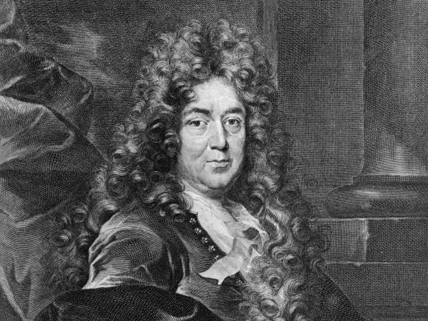
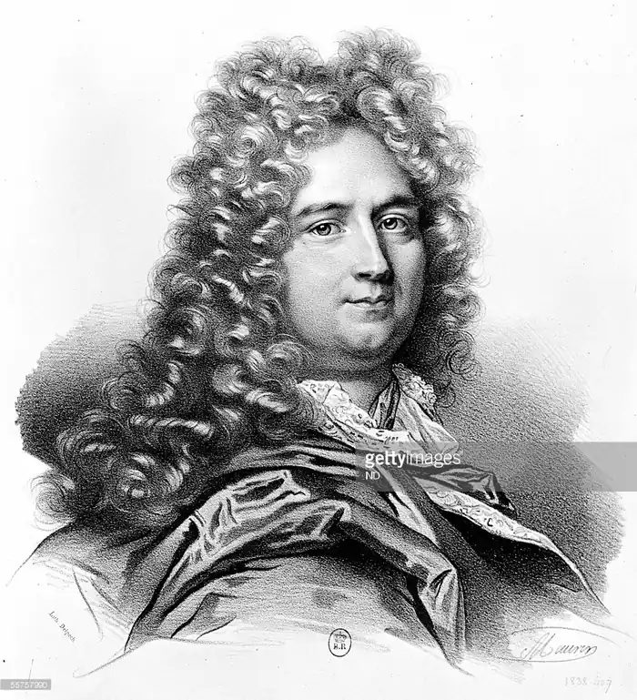

Шарль Перро (12.1.1628, Париж,— 16.5.1703, там же), французький поет і критик. Член Французької академії з 1671.
Народився в буржуазно-чиновницької родини. Вивчав юриспруденцію, служив при дворі. Перші літературні досліди — любовні вірші. Перший твір Перро — пародійна поема "Стіни Трої, або Походження бурлеску" (1653).
Писав алегоричні поеми, оди, послання в стилі галантної придворної поезії. Учасник літературного "спору древніх і нових", він відстоював зверхність сучасних йому письменників над древніми (поема "Століття Людовика Великого", 1687, діалоги "Паралелі між древніми і новими в питаннях мистецтва і наук"). Славу Перро приніс збірка "Казки моєї матінки Гуски, або Історії і казки минулих часів з повчаннями" (1697). Казки Перро — це казки чарівні (містять магічні або надприродні елементи). Вони сходять до народної традиції і часто передавалися з уст в уста. У багатьох країнах існують різні версії однієї і тієї ж казки, що залежить від натхнення, культурного і соціального контексту оповідача. Величезна заслуга Перро в тому, що він вибрав з безлічі народних казок кілька історій і зафіксував їх сюжет, який ще не став остаточним. Він надав їм тон, клімат, стиль, характерний для 17 століття, і тим не менш дуже особистий. Античної традиції Перро протиставив народну казку ("Червона Шапочка", "Хлопчик з пальчик" та ін) і ввів її в систему літературних жанрів. Перший російський переклад казок Перро відноситься до 1768 ("Казки про волшебницах з моралями"). Казка "Кіт у чоботях" переведена Ст. А. Жуковським (1845). На сюжети казок Перро створені опери "Попелюшка" Дж. Россіні, "Замок герцога Синя Борода" Б. Бартока, балети "Спляча красуня" П. В. Чайковського, "Попелюшка" С. с. Прокоф'єва та ін